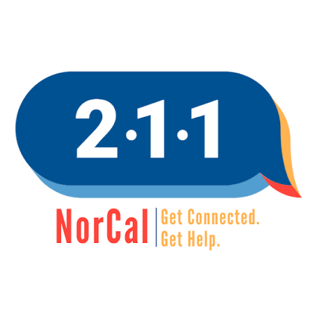

FNRC services and referrals
Far Northern Regional Center (FNRC) provides information about developmental disability services, eligibility, and service coordination. Ask your coordinator about services outside ACP's scope.
You may need help beyond ACP's services. These resources can help you learn about funding, find local assistance, and understand your options. You can visit them directly without becoming an ACP client. Information is free to browse; individual programs may have eligibility rules, costs, or funding requirements.
Learn about regional center services, the Self-Determination Program (SDP), and planning help.
Far Northern Regional Center (FNRC) provides information about developmental disability services, eligibility, and service coordination. Ask your coordinator about services outside ACP's scope.
Start with the official State Council on Developmental Disabilities (SCDD) orientation page for registration and current requirements. FNRC links families to this statewide orientation. Watching a recording alone does not provide an orientation certificate.
Guided Growth Solutions LLC offers person-centered planning and independent facilitation. Contact the organization about availability, scope, fees, and funding. It is separate from ACP; listing it does not make its services free or required.
Upper Park Legacy offers Independent Facilitator services. Ask about availability, service area, fees, and funding.
Contact Jessica at 530-518-6601
Public information about the approaches behind our training. Training, certification, and equipment may have costs.
Learn about Ukeru's trauma-informed approach and official training options. Public information is available online; training and equipment may have costs.
Learn about everyday interaction, prevention, and behavior-support training. The PCMA (Professional Crisis Management Association) information site now redirects to Pivot. Course enrollment and certification may have costs.
Local help and statewide information. Each organization sets its own eligibility, availability, and costs.

Search for food, housing, benefits, transportation, and other local assistance. The directory is free to use; listed services have their own eligibility and costs. You can also call 211.
Confidential support for people affected by domestic violence, sexual assault, and human trafficking, including safety planning and advocacy. Contact the organization about the appropriate program and any requirements. This is family safety support, not an autism treatment service.
Public disability information, advocacy updates, and resources for people with intellectual and developmental disabilities and their families. Check individual programs for access requirements.
Free-to-read information about disability rights, regional center services, education, benefits, and self-advocacy. Individual assistance depends on the organization's intake and priorities.
Information and resource libraries from national organizations.
Information and resources organized by topic.
An autistic-led resource library.
Outside organizations operate independently of Arcionis Care Partners (ACP). Contact them directly about eligibility, availability, accommodations, and cost. A link does not guarantee acceptance or imply a partnership.